Domus EnergiaEstação Nómada, Unipessoal Lda. opancas.pt · outubro de 2026
Como funciona a Domus Energia
O percurso de um pedido, do primeiro clique à obra paga. Para ler, riscar e melhorar.
A Domus Energia faz instalações elétricas e casa inteligente na Grande Lisboa. O cliente pede tudo pelo sítio opancas.pt; a obra é feita por eletricistas parceiros, cada um na sua especialidade. Um programa trata do que costuma dar trabalho e discussões: o orçamento, a marcação, as fotos, os ensaios, a cobrança e o pagamento a quem fez a obra.
Este documento mostra esse programa como ele está hoje, com imagens dos ecrãs verdadeiros. Está a funcionar, mas ainda sem clientes: as obras começam em setembro de 2027. É a altura certa para o melhorar. Em cada passo há um espaço tracejado, "As suas ideias": escreva lá o que mudava, o que falta e o que não funciona numa obra a sério.
Quem usa o programa
O clienteDescreve a casa, recebe a proposta, paga e acompanha tudo na conta dele. No telemóvel.
A empresaVerifica os pedidos, fixa os preços, envia as propostas e paga aos parceiros. No painel.
O eletricista parceiroVê os pedidos do seu concelho, propõe, faz a obra e regista-a. No telemóvel.
A casaOs aparelhos instalados falam com a app do cliente: luzes, estores, consumos, alarme.
O percurso em oito passos
CLIENTE1. Descreve a casaDesenha a planta e junta a foto do quadro.
EMPRESA2. Verifica o pedidoPlanta, foto, zona e contacto. Devolve se faltar algo.
ELETRICISTA3. PropõeVê o pedido sem saber quem é o cliente. Diz horas e material.
EMPRESA4. Envia a propostaEscolhe um eletricista, fixa o preço e envia ao cliente.
CLIENTE5. Aceita e paga o sinalSó agora o eletricista vê o nome e a morada.
ELETRICISTA6. Visita e obraMarca a visita, faz a obra, tira fotos e mede.
CLIENTE7. Confirma e paga o restoDiz que ficou bem, avalia e paga.
EMPRESA8. Aprova e pagaAprova o trabalho e paga ao eletricista.
A grande diferença em relação ao habitual: o cliente recebe o preço antes de qualquer visita. A visita vem depois de ele aceitar e pagar o sinal, e muitas vezes a obra fica feita nesse dia.
1O cliente descreve a casa
Cliente · no telemóvel ou no computador
No sítio, escolhe "Descrever a minha casa" (primeira vez) ou "Pedir um serviço": automatizar, reparar, trocar o quadro, obras.
Diz o tipo de casa e a tipologia. O programa desenha uma planta de partida; o cliente arruma as divisões e põe portas, janelas, interruptores, tomadas e pontos de luz onde eles estão.
Tira uma foto do quadro elétrico com a porta aberta. Sem ela o pedido não avança: é por ela que se prepara a proposta.
Escolhe o que quer: quadro seguro, poupar energia, estores, carregador do carro, etc. Vê logo uma estimativa (um intervalo de preço).
Envia. Fica com uma conta, onde acompanha o pedido e guarda até cinco casas.
Porque é assim: o cliente faz em dez minutos o levantamento que custava uma deslocação. Quem vai fazer a obra chega a saber quantas divisões, pontos e circuitos há, e como está o quadro.
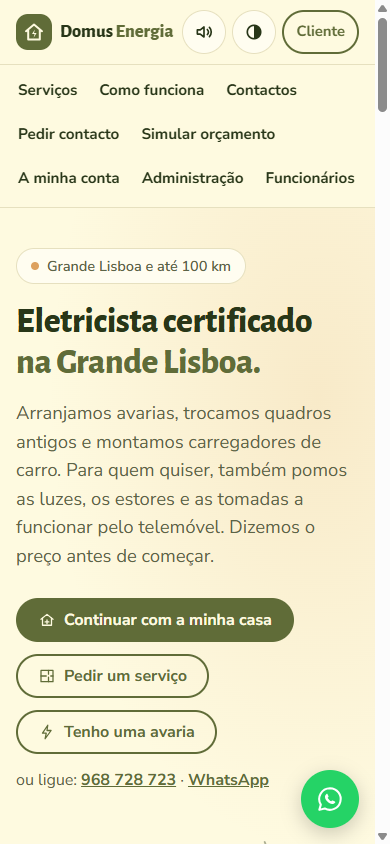
A entrada do sítio
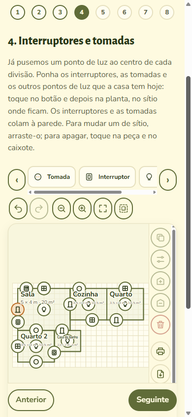
A planta, com as tomadas postas pelo cliente
As suas ideias
O que precisa mesmo de saber de uma casa antes de dar um preço, e que aqui não se pergunta?
Que fotos pedia, além da do quadro? (contador, caixas de derivação, casa de banho…)
Um cliente consegue pôr as tomadas na planta sem se enganar? O que simplificava?
2A empresa verifica o pedido
Empresa · no painel
Cada pedido novo fica "Por validar". Abre-se a ficha e confere-se uma lista: a planta faz sentido, a foto do quadro lê-se, a casa fica num concelho servido, o contacto está certo.
Se faltar alguma coisa, carrega-se em "Devolver ao cliente" e escreve-se o que falta. O cliente recebe um email, corrige na conta e diz "Já corrigi".
Sem estar validado, o pedido não vai para os eletricistas e a proposta não se envia.
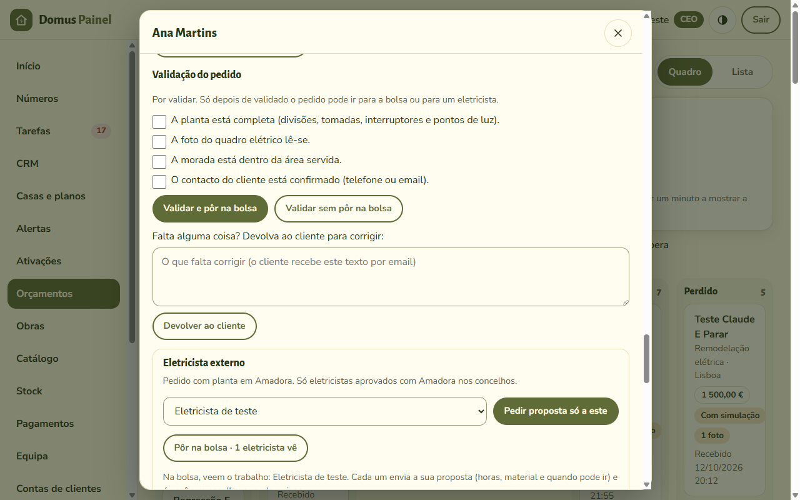
A ficha do pedido no painel, com a lista de verificação
Porque é assim: o eletricista só recebe pedidos completos. Ninguém perde tempo a propor para uma casa fora da zona ou com uma foto onde não se vê nada.
As suas ideias
Que mais se devia conferir antes de um pedido chegar a um eletricista?
Na sua especialidade, o que faz um pedido ser "impossível de orçamentar à distância"?
3O pedido vai para a bolsa e os eletricistas propõem
Eletricista parceiro · no telemóvel
O pedido validado aparece na bolsa dos parceiros que trabalham nesse concelho. A empresa também pode pedir a proposta só a um.
O eletricista vê a planta, as fotos e um relatório técnico sem preços. Não vê o nome, a morada nem o telefone do cliente.
Propõe as horas de trabalho, o material (escolhido do catálogo) e quando pode ir. Pode juntar uma nota.
Vários podem propor para o mesmo pedido. A empresa escolhe um; as outras propostas ficam de reserva.
Porque é assim: quem conhece a obra diz quanto tempo leva; o preço não sai de uma tabela cega. E o cliente fica protegido: os dados dele só chegam a quem vai mesmo fazer o trabalho.
A saber: para entrar na bolsa, cada parceiro candidata-se em "Trabalhe connosco" com o NIF, o n.º de habilitação na DGEG, o seguro de responsabilidade civil e os concelhos onde trabalha. A empresa aprova. Hoje o programa pede sempre o n.º da DGEG.
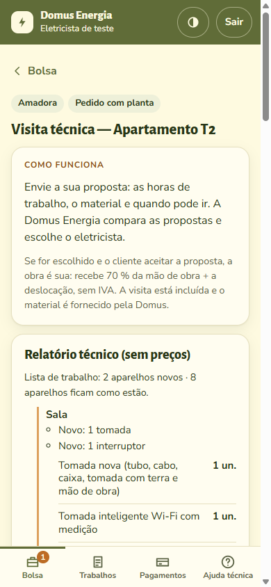
Um pedido na bolsa: sem nome nem morada
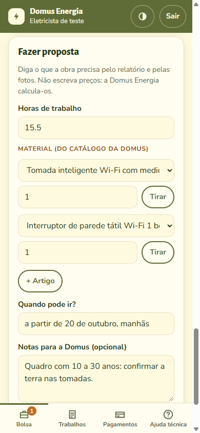
A proposta do eletricista: horas e material
As suas ideias
Com a planta, as fotos e o relatório, consegue dar horas com confiança? O que lhe faltava ver?
Que material falta no catálogo da sua especialidade?
Como devia a empresa escolher entre duas propostas: a mais barata, a mais rápida, a de quem tem melhor avaliação?
45A proposta, o "Aceito" e o sinal
Empresa · depois Cliente
A empresa parte da proposta do eletricista e fixa o preço em três partes: mão de obra, material e deslocação. O texto que o cliente lê é preenchido sozinho ("Inclui: 6,5 h de trabalho; 2 × tomada…").
O cliente vê na conta o preço com IVA e dois botões: "Aceito" e "Não aceito". Não aceitar não custa nada, só pede o motivo.
Ao aceitar paga o sinal: o maior entre 30 % do total e o custo do material. O material fica reservado no stock.
O preço é definitivo, salvo o que só se descobre no local (ver "Trabalho a mais", no passo 6).
Só agora o eletricista escolhido passa a ver o nome, a morada e o telefone do cliente.
Porque é assim: ninguém se desloca para dar um orçamento que não é aceite. Quando o eletricista sai de casa, o cliente já disse que sim e o material já está pago.
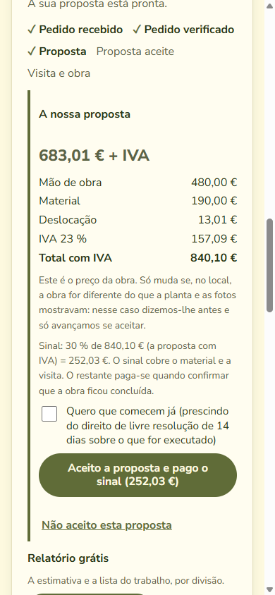
A proposta na conta do cliente
Quanto recebe o eletricista
Vê-o no telemóvel antes de aceitar o trabalho. A regra de hoje, igual para todos (a percentagem muda-se no painel):
Parte
Regra
No pedido de exemplo
Mão de obra
70 % da mão de obra da proposta, sem IVA
70 % × 480,00 € = 336,00 €
Deslocação
Toda a deslocação que o cliente paga, sem IVA
13,01 €
Trabalho a mais
70 % da mão de obra do que o cliente aceitar a mais
—
Visita perdida
A deslocação dessa ida (no mínimo 20,33 €, que são 25 € com IVA)
—
Total
Pago até 7 dias depois de o cliente pagar e a empresa aprovar, contra fatura-recibo
349,01 €
No exemplo, o cliente paga 840,10 € com IVA (mão de obra 480,00 €, material 190,00 €, deslocação 13,01 €, mais IVA): 252,03 € de sinal e 588,07 € no fim. O material é da Domus Energia: o eletricista não o compra nem o fatura.
As suas ideias
A divisão 70 % + deslocação é justa para a sua especialidade? O que devia contar e não conta?
O sinal chega para o material que costuma usar? Há obras em que tinha de ser mais?
6Visita e obra
Eletricista parceiro · no telemóvel, em obra
Tem 48 horas para combinar a data com o cliente e registá-la. Se não marcar, o trabalho volta à bolsa.
Na ficha da obra regista: foto do quadro antes e depois, os ensaios medidos (continuidade, isolamento, terra, disparo do diferencial) e, se mexeu no quadro, o esquema.
Só com tudo preenchido, e depois da hora da visita, pode carregar em "Obra concluída".
Quando a obra não corre como combinado
Trabalho a mais: o eletricista descreve o que encontrou, com horas e material. A empresa põe o preço e envia ao cliente, que aceita ou recusa na conta. Se recusar, faz-se o resto ao preço combinado.
O cliente não estava: o eletricista assinala-o depois da hora marcada. Se a empresa confirmar, o cliente paga a deslocação dessa ida (mínimo 25 € com IVA) e o eletricista recebe-a.
Não é seguro continuar: a empresa pára a obra, devolve ao cliente o sinal menos o material já encomendado e o trabalho feito, e paga ao eletricista o que ele já fez.
Porque é assim: fica escrito o que foi combinado e o que foi feito, com fotos e medições. Se houver uma reclamação daqui a um ano, a prova existe. E nenhum trabalho a mais se faz sem o cliente ter dito que sim por escrito.
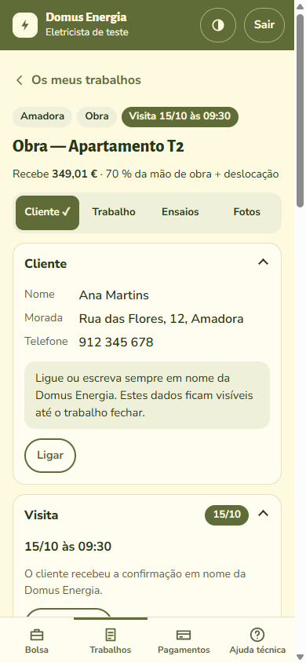
A ficha da obra, já com o cliente e a visita
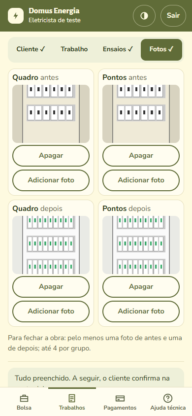
As fotos de antes e de depois
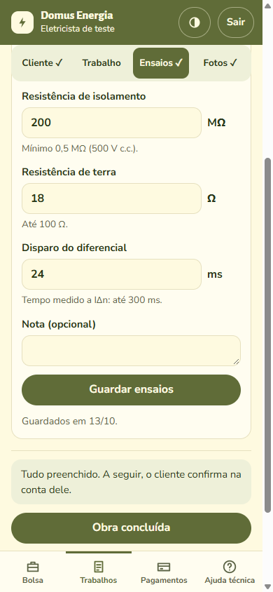
Os ensaios e "Obra concluída"
As suas ideias
Com luvas e pó, o que consegue mesmo registar no telemóvel? O que tirava, o que juntava?
Que ensaios e fotos são obrigatórios na sua especialidade (solar, carregadores, redes)?
Qual devia ser o procedimento passo a passo da sua obra mais comum?
78O cliente confirma, paga, e a empresa paga ao eletricista
Cliente · depois Empresa
O cliente recebe um email e vê na conta: "O trabalho ficou concluído?" Responde sim e dá de 1 a 5 estrelas, ou diz o que falta.
Se disser que falta alguma coisa, a empresa decide: o trabalho volta ao eletricista, ou vê-se que não há defeito.
Se não responder, recebe um lembrete ao 5.º dia; ao 7.º dia o trabalho fica aceite.
Paga o restante na conta. Só então a app da casa fica ativa.
A empresa aprova o trabalho. O eletricista envia a fatura-recibo pelo telemóvel e recebe por transferência até 7 dias depois.
Porque é assim: o eletricista não anda atrás do cliente para receber. Cobra a empresa, e ele vê no telemóvel o que fez, o que está aprovado e quando é pago.
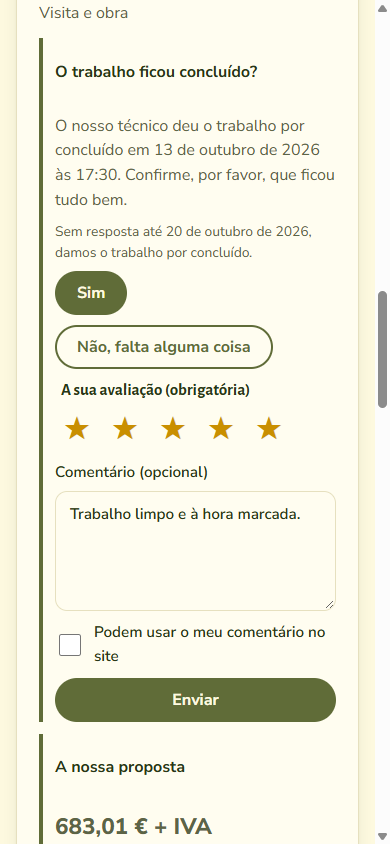
O cliente confirma e avalia
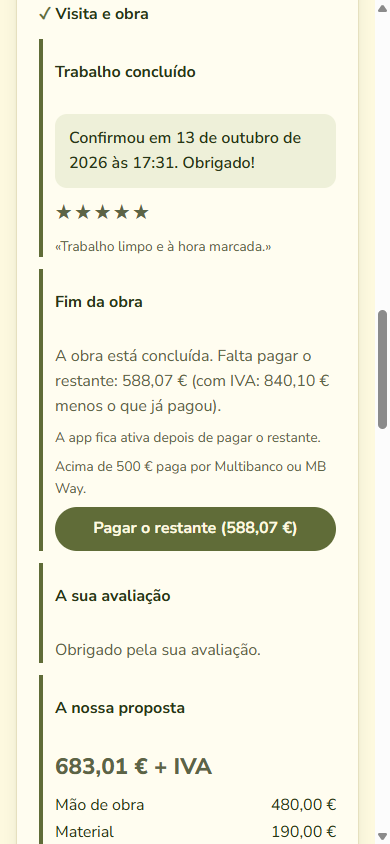
Depois, paga o restante
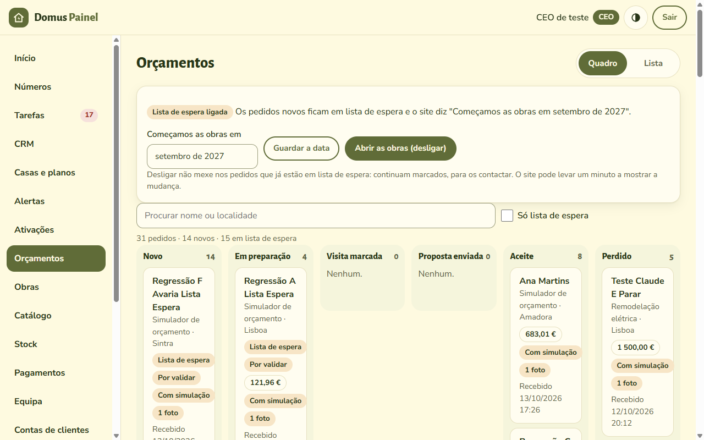
O painel da empresa: todos os pedidos, por fase
As suas ideias
Sete dias para o cliente responder e sete para o eletricista receber: é razoável? O que mudava?
Como se devia tratar uma reclamação três meses depois da obra? Quem volta lá, e quem paga?
Depois da obra: a casa e a app
Cliente · todos os dias
Os aparelhos instalados (interruptores, tomadas e disjuntores com Wi-Fi, sensores, estores) ligam-se ao servidor da Domus Energia. O cliente vê-os e comanda-os numa app que se instala no telemóvel a partir do sítio.
A app mostra a casa em quatro separadores: Casa (modo e alarme, cenas, consumo), Automações, Aparelhos (o estado de cada um) e Histórico.
Avisa no telemóvel: alarme, porta aberta, aparelho sem ligação, pilha a acabar.
O serviço mensal tem planos; a empresa vê alertas das casas e pode ajudar à distância.
Duas regras de segurança que não se discutem
O botão manual funciona sempre, com ou sem internet, com ou sem servidor.
O servidor nunca corta um circuito à distância. Mede e avisa; quem desliga é uma pessoa.
Porque é assim: é a parte que o cliente usa todos os dias e a que o faz ficar com a Domus Energia depois da obra. Para o parceiro de domótica, é trabalho que se repete: ampliações, sensores novos, manutenção.
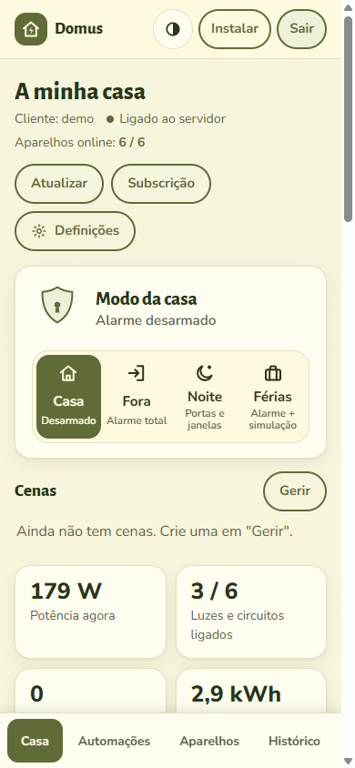
A app do cliente, no separador Casa
As suas ideias
Que aparelhos instalava numa casa normal? De que marcas confia, e de quais foge?
O que é que um cliente quer mesmo fazer no telemóvel, e o que nunca usa?
Solar e carregadores: o que devia a app mostrar (produção, carga do carro, horas mais baratas)?
Como se entrega a casa ao cliente no fim? Quem lhe explica a app?
As vantagens, para cada um
Para o eletricista
Trabalho que chega sem publicidade nem orçamentos perdidos.
Só se desloca com a obra aceite e o material pago.
Sabe quanto recebe antes de aceitar.
Não cobra ao cliente nem compra material.
Fica com o registo de cada obra: fotos, ensaios, esquema.
Paga-lhe uma empresa, com prazo, e ele vê as contas.
Para o cliente
Sabe o preço antes de alguém lhe entrar em casa.
Os dados dele só chegam a quem faz a obra.
Nada a mais sem ele aceitar por escrito.
Um só contrato e uma só fatura, da Domus Energia.
Vê as fotos e as medições da obra dele.
Fica com a casa na app.
Para a parceria
Cada um trabalha na sua especialidade; as obras grandes juntam vários.
As mesmas regras e os mesmos procedimentos para todos.
Uma marca e um sítio, em vez de cinco.
Contas à vista: cada um vê o que fez e o que tem a receber.
Clientes que ficam, pelo serviço mensal da casa.
O que ainda não existe
Para ninguém contar com o que não há:
Clientes e obras. As obras começam em setembro de 2027. Até lá os pedidos ficam em lista de espera, sem pagamentos.
Pagamentos reais. O programa está pronto para cartão, MB Way e Multibanco, mas ainda só foi testado com pagamentos simulados.
Um técnico responsável. As obras têm de ser assinadas por quem o possa fazer. O Rui ainda não pode.
Os textos legais novos. Os Termos do sítio estão a ser revistos por um advogado, para dizerem o que o programa já faz.
Tabelas de preços por especialidade. Há uma tabela geral; a de solar, carregadores e redes está por fazer. É uma das coisas em que mais precisamos de si.
O que mudava primeiro?
Se só pudesse mudar três coisas neste programa, quais eram?
O que o faria dizer "com isto não trabalho"?
Que preços e tempos da sua especialidade temos de pôr na tabela? (por exemplo: horas para instalar um carregador, um inversor, um ponto de rede)
As imagens são do sítio de testes, com um pedido de exemplo e dados inventados. Os valores e as regras são os que o programa aplica em outubro de 2026 e podem mudar com as ideias de quem ler isto.